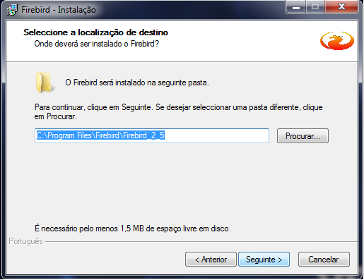
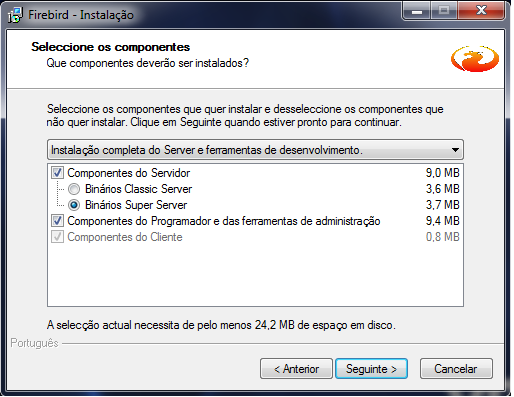
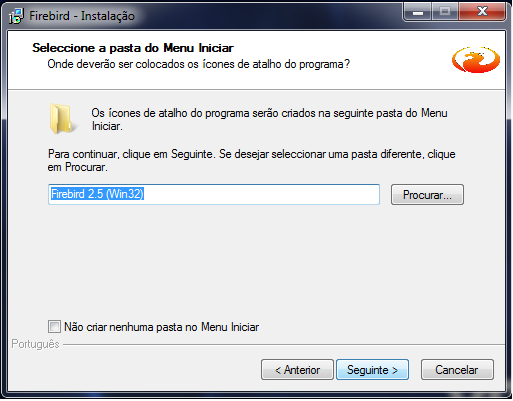
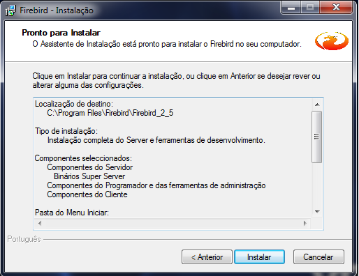
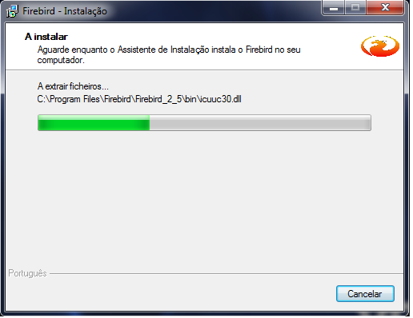
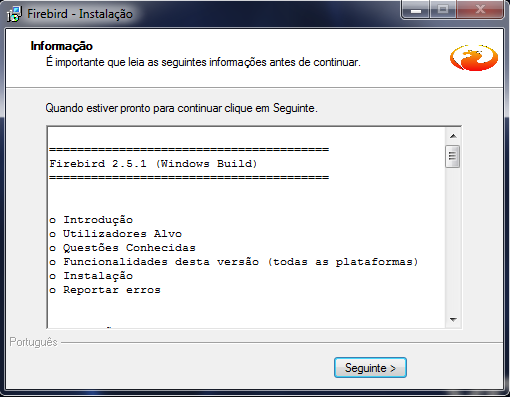

Instalação Firebird |
  
|
Instalação Firebird |
|
Antes da instalação
É recomendado que você DESINSTALAR todas as versões anteriores do Firebird ou InterBase antes de instalar este pacote. É especialmente importante para verificar que fbcliente.dll e gds32.dll são removidos <system32> .
Outros problemas de instalação conhecidos
Só é possível usar o instalador binário para instalar a instância padrão do Firebird 2.5. Se você deseja instalar adicional, chamada casos, você deve instalá-los manualmente com a imagem de instalação zipado.
Infelizmente, o instalador não pode detectar com segurança se uma versão anterior do servidor Firebird Classic está funcionando.
Existem áreas conhecidas de sobreposição entre as instalações de 32 bits e de 64 bits:
O instalador de serviço ( instsvc ) usa o mesmo nome de instância padrão para instalações de 32 bits e de 64 bits. Isso ocorre por design. Serviços existir num espaço nome.
Se os applets do painel de controle de 32 bits e de 64 bits são instalados ambos irão apontar para a mesma instância padrão.
Ao instalar no Vista não se esqueça de instalar como administrador. isto é, se estiver usando o instalador binário com o botão direito e selecione Executar como administrador . Caso contrário, o instalador não será capaz de iniciar o serviço Firebird no final da instalação.
Bibliotecas implantadas por instclient deixará de carregar se as bibliotecas de tempo de execução de MS não foram instalados corretamente. Em caso de problemas os usuários devem instalar a versão apropriada do Vcredist.exe mencionado acima.
É preferível que este pacote seja desinstalado corretamente usando o aplicativo de desinstalação fornecido. Isso pode ser chamado a partir do Painel de Controle. Em alternativa, pode ser desinstalado executando unins000.exe diretamente do diretório de instalação.
Se o Firebird está sendo executado como um aplicativo (em vez de como um serviço) é recomendado que você parar manualmente o servidor antes de executar o desinstalador. Isso ocorre porque o desinstalador não pode parar um aplicativo em execução. Se um servidor está sendo executado durante a desinstalação a desinstalação será concluído com erros. Você terá que eliminar os restos com a mão.
Desinstalação deixa cinco arquivos no diretório de instalação:
1.aliases.conf
2.firebird.conf
3.fbtrace.conf
4.firebird.log
5.security2.fdb
Isso é intencional. Esses arquivos são todos potencialmente modificáveis pelos usuários e pode ser necessária se o Firebird é reinstalado no futuro. Eles podem ser eliminados se não for mais necessário.
Um novo recurso do desinstalador é uma opção para executá-lo com o / LIMPAR parâmetro. Isto irá verificar a contagem de cada um dos arquivos acima de arquivo compartilhado. Se possível, ele vai eliminá-los.
Desinstalação não irá remover os MS VC bibliotecas de tempo de execução a partir do diretório do sistema. Estes podem ser removidos manualmente através do painel de controlo, mas isso não deve ser necessária, em circunstâncias normais.
► 1º Instalar o Firebird.

1.1 Clique em OK

1.2 Depois em Seguinte

1.3 Marque a Opção "Aceito o contrato" e Clique em Sequinte

1.4 Clique em Seguinte

1.5 Clique em Sequinte

1.6 Marca "Binários Super Server" e Clique em Sequinte

1.7 Clique em Sequinte

1.8
Se o sistema operacional for win98 usar a opção "Executar como Aplicação?" - Sim
Se o sistema operacional for Nt\Xp\2000\2003 usar opção "Executar como um Serviço?" - Sim
Marca sempre a opção "Iniciar o Firebird automaticamente de cada vez que o sistema arranca?"
Desabilitar a opção "Instalar a aplicação do Painel de Controlo?" Se Win Vista ou win7
Marcar sempre a opção " Copiar a biblioteca do cliente Firebird para a pasta de <system>?" - Para todos os Sistemas Operacionais
Marcar sempre a opção " Criar a biblioteca do cliente como GDS32.DLL para retro-compatibilidade?" - Para todos os Sistemas Operacionais
Clique em Seguinte

1.9 Clique Instalar

1.10 Aguarde extração dos arquivos

1.11 Clique em Seguinte

1.12 Clique em Concluir